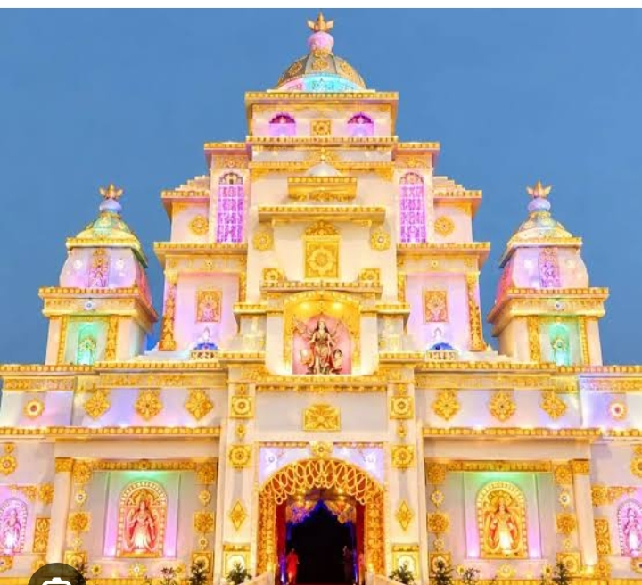

Bhaisaur Durga Ji
जय माता दी! 🙏
Welcome to Bhaisaur Durga Ji.
Discover the importance of devotion, celebrate the
spirit of Durga Puja and seek the blessings of Maa Durga.
Importance of Bhaisaur Durga Ji
Faith, devotion and the message of Maa Durga.
Bhaisaur Durga Ji is the focus of this devotional website celebrating Maa Durga and the spirit of Durga Puja in the Bihar Sharif area.
The importance of Durga Puja lies in the worship of Maa Durga, who symbolises courage, strength and the victory of good over evil. Devotees pray to the Goddess for peace, happiness and prosperity.
For devotees, visiting a Durga Puja pandal can be an opportunity to offer prayers, spend time with family and participate in the festive atmosphere.
The exact local history, founding year, special traditions and annual theme of Bhaisaur Durga Puja have not been independently verified here. These details should be confirmed with local organisers before publication.
जय माता दी! 🙏 May Maa Durga bless everyone with courage, peace and success.
Puja Highlights
Experience the beauty and devotion of Durga Puja.
Maa Durga Darshan
Offer prayers and seek the blessings of Maa Durga.🌺 Maa Durga Darshan – Divine Blessings 🌺 Welcome to the divine darshan of Maa Durga, the symbol of strength, courage, love, and the victory of good over evil. Her divine appearance, beautiful smile, and magnificent decorations fill the hearts of devotees with peace, devotion, and positivity. During the auspicious festival of Durga Puja, Bihar Sharif transforms into a beautiful place of devotion and celebration. The magnificent pandals, colorful lights, stunning decorations, devotional songs, and enchanting aartis create a truly divine atmosphere. Devotees visit Maa Durga's pandals with deep faith and devotion to seek her blessings for happiness, prosperity, good health, and success. Her divine presence inspires everyone to follow the path of truth, courage, kindness, and righteousness. Come and experience the spiritual beauty of Maa Durga Darshan, admire her magnificent idol, and immerse yourself in the divine atmosphere of Durga Puja. May Maa Durga bless every family with peace, happiness, prosperity, and endless love. 🌸 May Maa Durga remove all obstacles from our lives and fill our hearts with strength, hope, and positivity. 🌸 🙏 Jai Mata Di! Jai Maa Durga! 🙏
Aarti & Bhakti
Experience devotional songs, prayers and spiritual peace. 🪔 Aarti & Bhakti – Divine Devotion 🪔 Experience the divine power of Maa Durga through the sacred sounds of Aarti, devotional songs, and heartfelt prayers. The melodious chants of “Jai Ambe Gauri” and “Jai Mata Di” create a peaceful and spiritual atmosphere that fills every heart with love, faith, and devotion. During Durga Puja, devotees gather in front of Maa Durga's beautifully decorated idol, light traditional diyas, offer flowers, and sing devotional songs to seek her divine blessings. The sound of bells, the glow of aarti lamps, and the fragrance of incense make the entire atmosphere feel sacred and magical. Bhakti is not just about prayers; it is about surrendering our hearts to the Divine Mother with pure love and unwavering faith. Through Aarti and Bhakti, we express our gratitude to Maa Durga and pray for happiness, good health, prosperity, and peace for everyone. Come, join the divine celebration, sing the sacred aarti, and immerse yourself in the spiritual beauty of Maa Durga's devotion. 🌺 Let the divine light of Maa Durga remove darkness from our lives and fill our hearts with faith, courage, and positivity. 🌺 🙏 Jai Mata Di! Jai Maa Durga! 🙏
Golden Lights
Enjoy the traditional festive atmosphere and decorations. ✨ Golden Light – Divine Glow ✨ Experience the magical beauty of golden lights illuminating the divine surroundings of Maa Durga. The warm golden glow creates a heavenly atmosphere, adding elegance, beauty, and a touch of spirituality to the entire Durga Puja celebration. The sparkling golden lights shine like divine blessings from the heavens, highlighting Maa Durga's magnificent idol and the beautiful decorations of the pandal. Their enchanting glow fills the atmosphere with positivity, devotion, and festive joy. Let the golden lights sparkle around you, creating a magical experience that celebrates the power, grace, and divine beauty of Maa Durga. 🌟 May the divine golden light of Maa Durga illuminate our lives with happiness, prosperity, peace, and endless blessings. 🌟 🙏 Jai Mata Di! 🙏
Festival of Faith
Celebrate devotion, hope and the victory of good over evil. 🌺 Festival & Faith – A Celebration of Devotion 🌺 Durga Puja is not just a festival; it is a beautiful celebration of faith, devotion, culture, and the victory of good over evil. It brings people together with hearts full of love and devotion to seek the divine blessings of Maa Durga. During this auspicious festival, Bihar Sharif comes alive with magnificent pandals, colorful decorations, sparkling lights, devotional songs, and the sacred sounds of aarti. The entire city is filled with spiritual energy, happiness, and festive excitement. Devotees visit Maa Durga's pandals with deep faith, offer flowers and prayers, and seek blessings for their families. The festival teaches us the importance of courage, kindness, truth, unity, and the eternal power of good over evil. Faith connects our hearts with the Divine Mother, while the festival gives us an opportunity to celebrate our traditions, share happiness, and create unforgettable memories with our loved ones. ✨ May this sacred festival strengthen our faith, fill our hearts with devotion, and bring peace, prosperity, and happiness to every home. ✨ 🙏 Celebrate with faith, shine with devotion, and spread the blessings of Maa Durga everywhere! 🌸 Jai Mata Di! Jai Maa Durga! 🌸
Photo Gallery
Illustrative images for the website. These are not verified photographs of Bhaisaur Pandal.
Maa Durga

Durga Puja Pandal
Golden Festival Lights
Maa Durga Aarti
Listen to devotional songs and prayers.
Jai Ambe Gauri 🙏
May Maa Durga fill every heart with courage, devotion, peace and happiness.
▶ Listen to Durga AartiFind Bhaisaur Durga Ji
Search for the location and get directions on Google Maps.
📍 Bhaisaur area, Bihar Sharif — please confirm the exact pandal location on Google Maps.